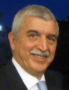

Professor Fraga received his doctoral degree in Biological Chemistry from
the University of Buenos Aires, in 1985. He held post-doctoral positions
at the Department of Food Science and Technology at the University of California,
Davis (1986-1988) and later at the Department of Biochemistry and Molecular
Biology at the University of California, Berkeley (1988-1990). In 1990
he was appointed Professor of Physical Chemistry at the School of Pharmacy
and Biochemistry, University of Buenos Aires and Researcher at the National
Council for Scientific Research Argentina (CONICET), positions that he
holds today. From 2004, Prof. Fraga also has a position of Research Professor
at the Department of Nutrition, University of California, Davis. His original
research interests in free radical and antioxidants in biological systems
have developed in his current research centered on the biochemical mechanisms
behind the effects of plant constituents on the mechanisms of disease,
especially hypertension and digestive pathologies. Dr. Fraga has published
more than 140 articles and given talks in more than 100 scientific conferences.
Currently he acts as Vice Executive President of the Oxygen Club of California,
Treasurer of the Society for Free Radical Research International, and Associate
Editor of the Food and Function (RSC) among other responsibilities.